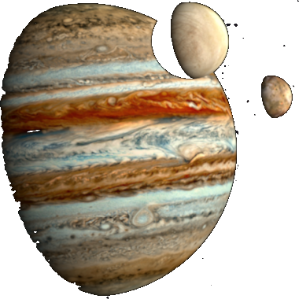
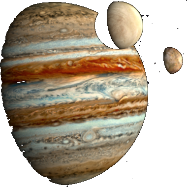

#### Python overview
- Interpreted, high-level general-purpose programming language
- First released in 1991
- Emphasises code readability and simplicity by use of significant **whitespace**
- Multiple programming paradigms: structured, **object-oriented** and functional
- Comprehensive standard library, large collection of additional libraries*
- Open and freely available
https://www.python.org/
Note: The large amount of existing libraries is the main reason for its recent success in science. Plenty of modules available so you don't need to implement the methods yourself.
And a major benefit is its free availablilty, so when you learn a programming language for example for your studies, you will be able to use it afterwards.
So if you plan to start learning a programming language I strongly recommend to use a freely available one, and Python is a good candidate.
Under this address you will find a download and after installation, you start the Python terminal
 
